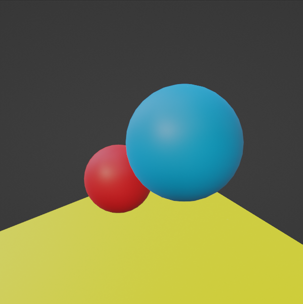

Vigneshwar Jayakumar
Checkpoint 1: Setting the Scene
Result image:

Specifications:
I did this using OpenGL to find out the place and position of the camera, Light and Objects
- Camera:
- Position: ( 9.0, 1.83, -0.8 )
- LookAt: ( 8, 1.83, -0.8 )
- Up: ( 0, 1, 0 )
- Light::
- Position: ( 10, 8, 1 )
- Color: ( 1, 1, 1 )
- Larger sphere:
- Position: ( 4, 2, 1 )
- Radius: 1
- Smaller sphere:
- Position: ( 2, 0, 1.5 )
- Radius: .75
- Floor:
- Corners: ( -8, 0, -3 ), ( -8, 0, 3 ), ( 8, 0, -3 ), ( 8, 0, 3 )